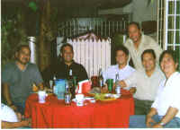
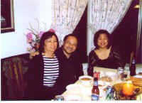
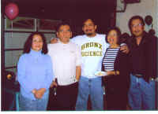
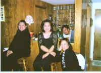

From: "Dolphy" 
Date: Fri Apr 1, 2005 7:43 am
Subject: Picture...picture...
Hello Everyone,
Attached are scanned photos from Caloy's last visit to the Philippines.
Enjoy,
'lo
From: caloy
Date: Fri Apr 1, 2005 3:42 pm
Subject: Re: [qcshs-75] Picture...picture... caloymanqcshs75
tita annie,
hi!, si Timon(roel montesa) ang nasa pix, ang champion ng "adding" at "lucky 9" sa batch natin.siya rin ang ka-duel ni irene sa violin kapag may program sa science.he has a degree in law somewhere(u.s.t.?)at isa na siya ngayon na broker sa customs at part-time smuggler(juk only!, art).actually, he was extending his warmest regards to everybody at anytime din baka bumisita daw siya dito, regards to dennis at arianne--caloy
|Grace Ann wrote:
|
|hello! sino yung katabi ni ruben?
|regards,
|annie
|
From: "Dolphy"
Date: Fri Apr 1, 2005 7:53 am
Subject: More pictures...
Hi,
More more pictures from Caloy.
I really have to break it up coz I have trouble sending it out in group last time.
One more set to follow.
These were taken from Caloy's sister bday party Jojo also from our alma mater,
batch '70 and his son Matt.
Its me again,
'lo
  
(webpage created on August 12, 2005)
{kind=link}
{kind=link}
{kind=link}
{kind=link}
{kind=link}
{kind=link}
{kind=link}
{kind=link}
{kind=link}